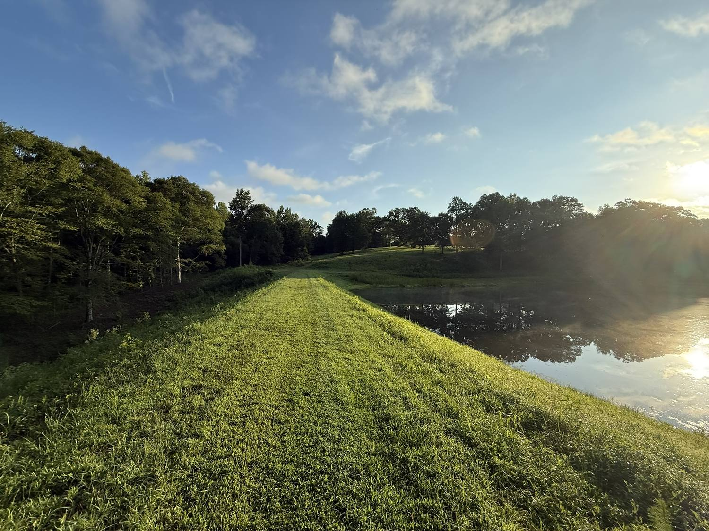
A private dog-walking park · Cumming, Georgia
Mowed trails. A quiet pond. Room to run.
Bring your dog to 568 Franklin Goldmine Road and walk the fields, the woods, and the top of the pond dam at your own pace. No crowds. No pavement.
The park
Farmland turned into a walking park for dogs and the people who love them.
The trails are mowed every week, so you can always see where you are going and where your dog went. The pond sits below a grass dam, and the walk along the top of the dam is the best stretch on the property when the sun comes up.
Off the dam, the trail loops through tall-grass meadow, along the tree line, and back to the front field. Most dogs settle into a trot within the first five minutes and stay there.
Mowed trails
Wide, cut paths through the fields and along the woods. Easy footing for people and paws.
The pond
A quiet pond with a grass dam you can walk across. Water dogs will find the bank on their own.
Fields and woods
Open meadow for a full sprint, and oak shade when the Georgia afternoon gets hot.
Photos
A walk around the property
Every photo here was taken on the park, on a normal morning walk with the dogs.
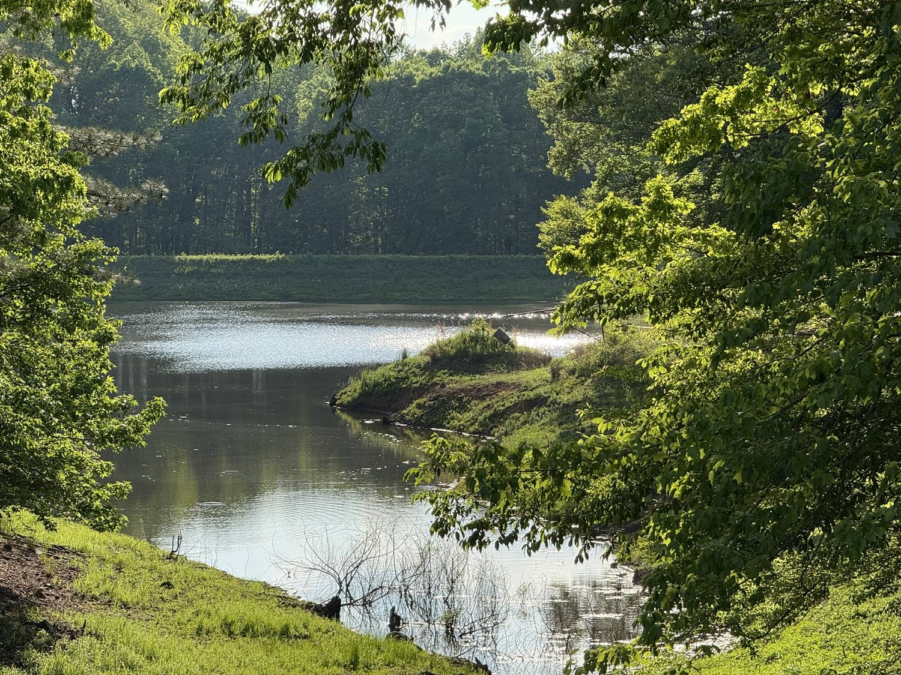
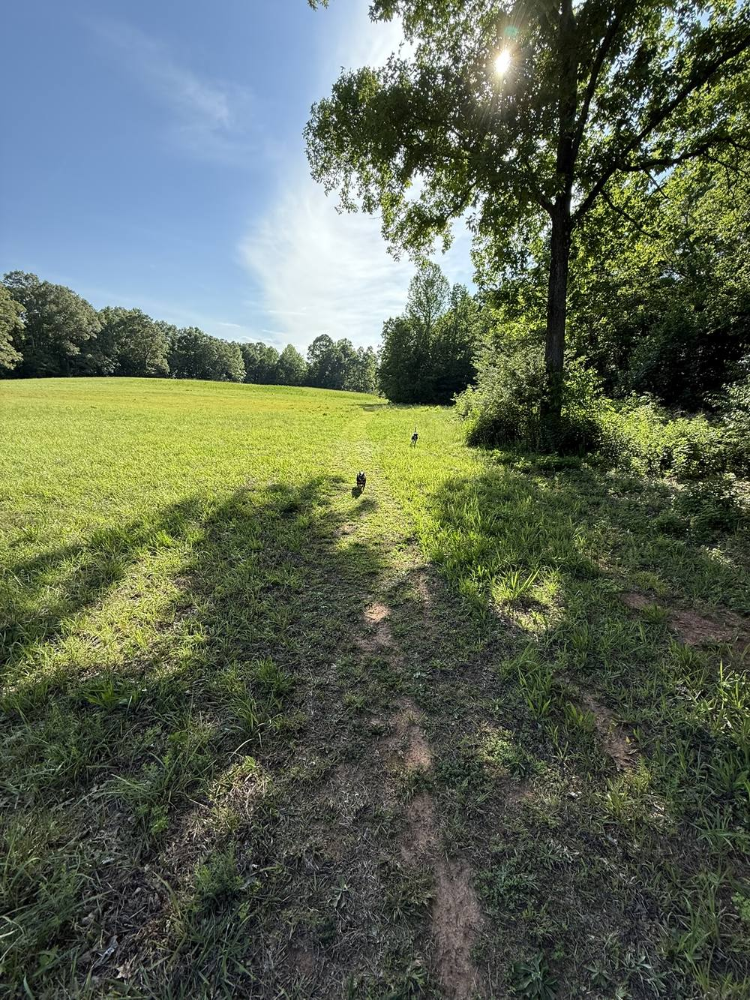
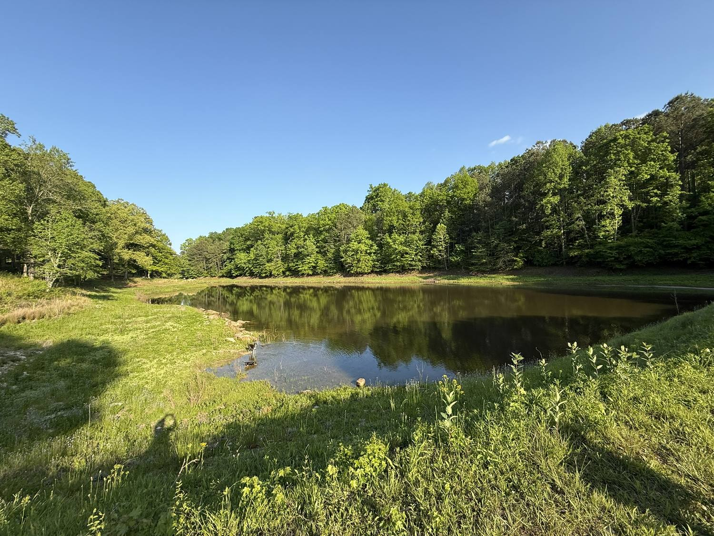
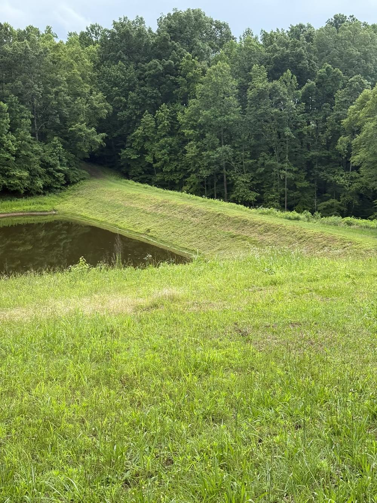
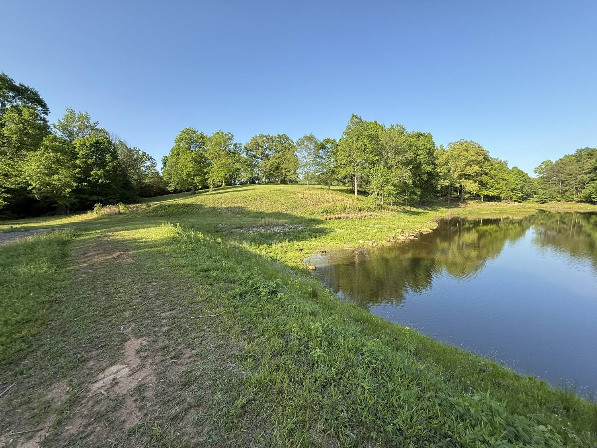
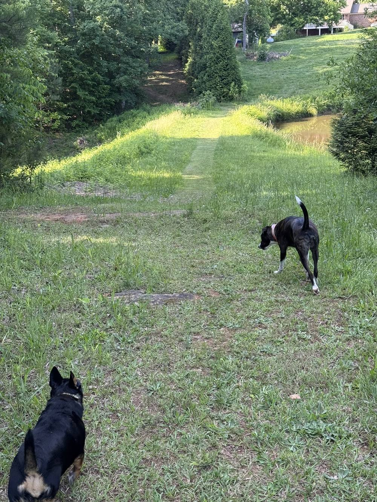
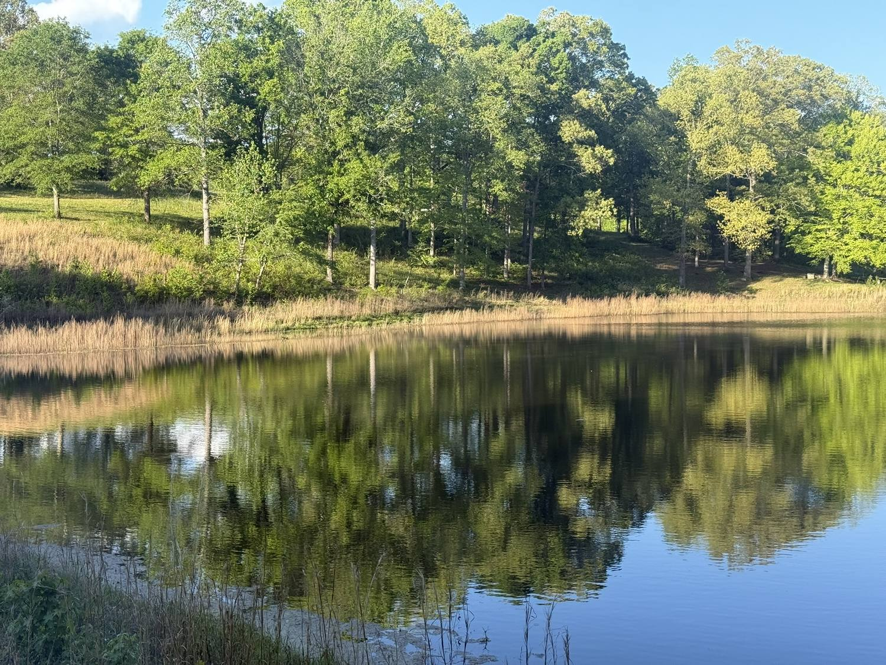
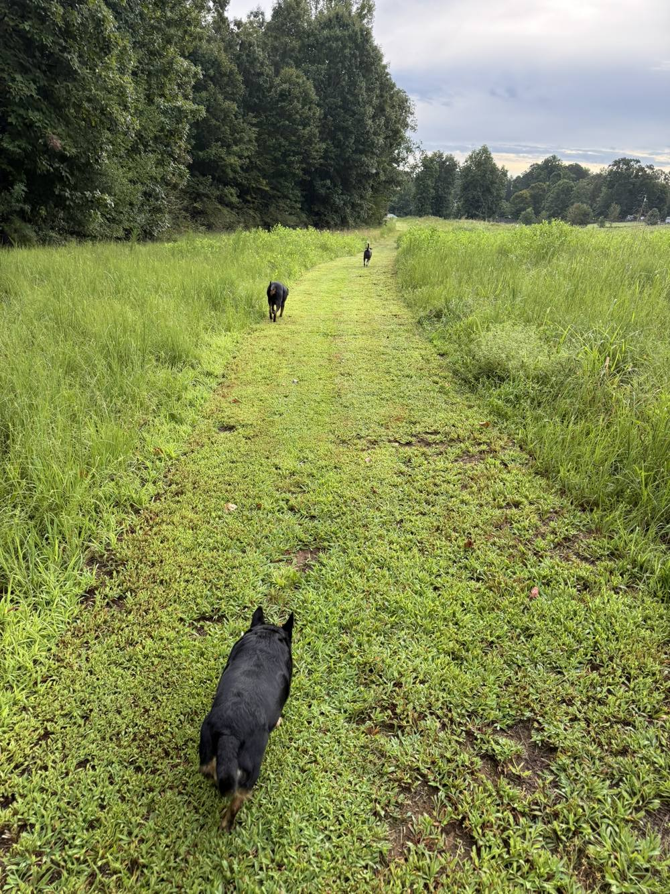
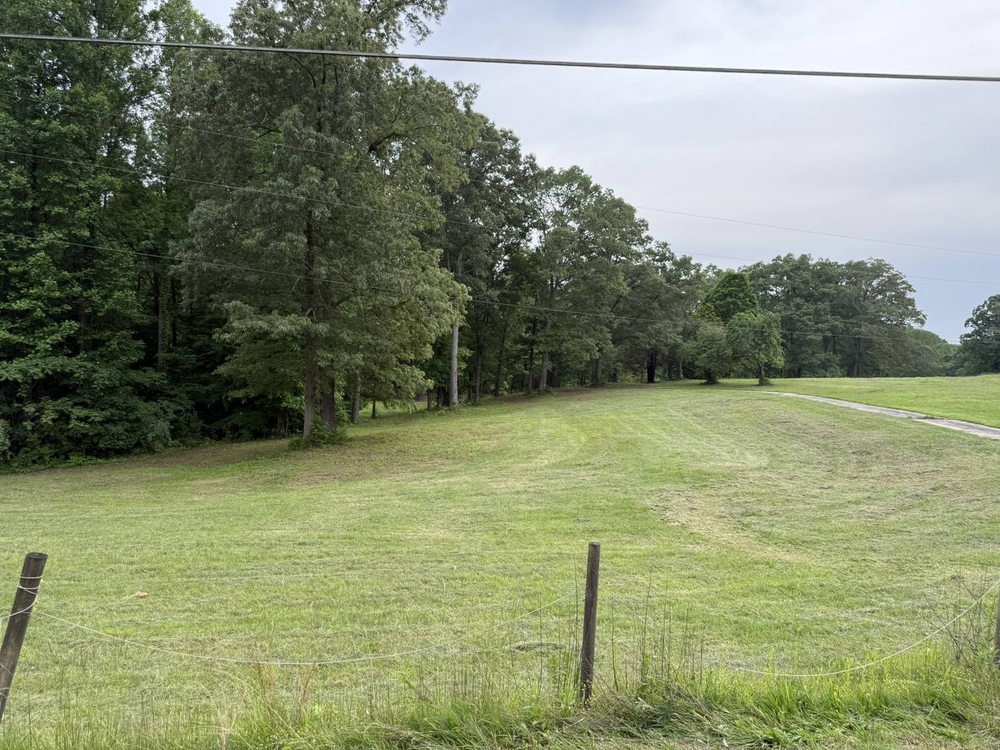
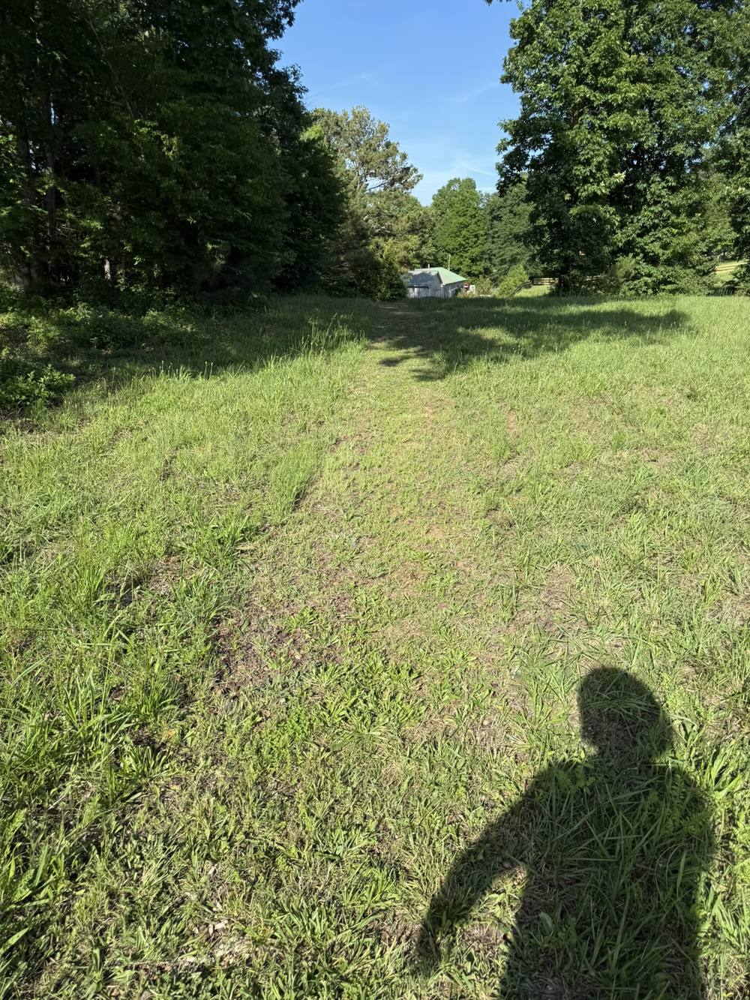
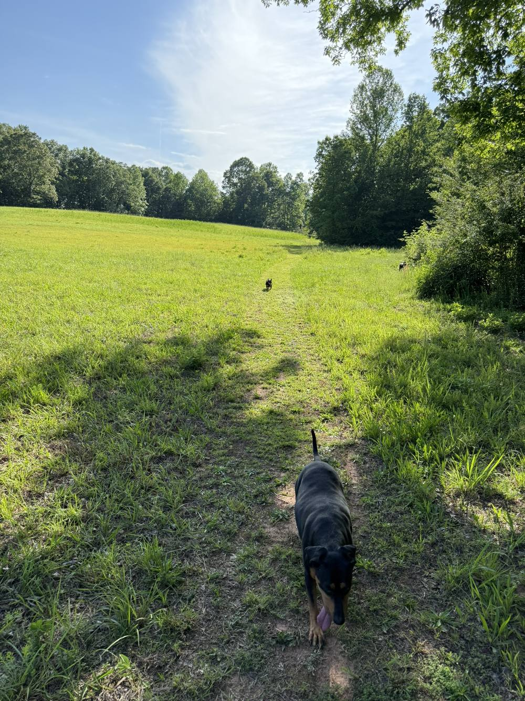
Plan a visit
Simple rules, so every dog has a good day.
This is a private park. Visits are arranged ahead of time, so you and your dog have the trails to yourselves.
-
Book before you comeCall or text to set a time. One family at a time on the trails.
-
Keep your dog in sightThe property is fenced on the road side only. Voice control matters here.
-
Pick up after your dogBring bags. Leave the trails the way you found them.
-
Bring water in summerThe pond is there, but a bowl at the car is a good idea on hot days.
Where
568 Franklin Goldmine Road
Cumming, GA 30028Forsyth County, north of Atlanta. Look for the gravel drive off Franklin Goldmine Road.
Ready to walk?
Call or text to set up your first visit. Tell us about your dog and we will find a time when the trails are all yours.